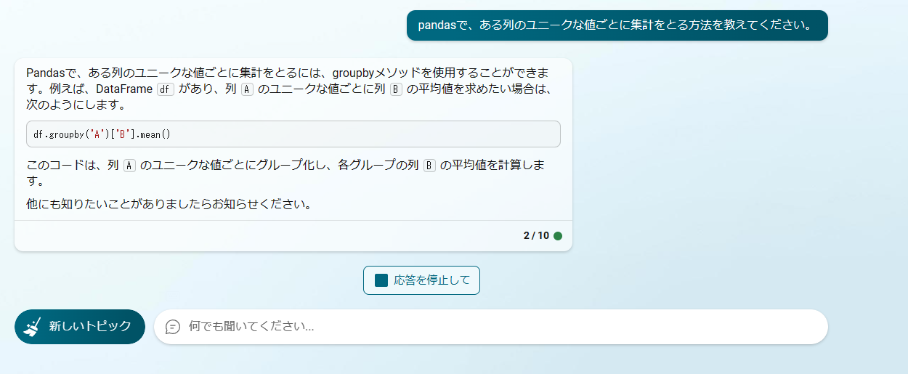

【確認課題】Pandas#
このPandas確認課題は、データサイエンス100本ノックの問題で最低限必要な問題を抜粋したものですが、Introduction_to_Pandas に掲載されていない機能が必要な問題もあります。
初めて触るライブラリを調べながら使うというのはよくある光景です。この課題では皆さんにもそれに挑戦していただきます。
ヒントとして検索キーワードなどを載せておくので、自力で調べながら解いてみましょう。
必要モジュールのインポート#
この問題で使うモジュールをインポートします．
import pandas as pd
import numpy as np
データの読み込み#
df_customer = pd.read_csv('https://raw.githubusercontent.com/The-Japan-DataScientist-Society/100knocks-preprocess/master/docker/work/data/customer.csv')
df_product = pd.read_csv('https://raw.githubusercontent.com/The-Japan-DataScientist-Society/100knocks-preprocess/master/docker/work/data/product.csv')
df_receipt = pd.read_csv('https://raw.githubusercontent.com/The-Japan-DataScientist-Society/100knocks-preprocess/master/docker/work/data/receipt.csv')
問1. 条件抽出#
P-006: レシート明細データフレーム「df_receipt」から売上日（sales_ymd）、顧客ID（customer_id）、商品コード（product_cd）、売上数量（quantity）、売上金額（amount）の順に列を指定し、以下の条件を満たすデータを抽出せよ。
顧客ID（customer_id）が”CS018205000001”
売上金額（amount）が1,000以上または売上数量（quantity）が5以上
問2. ソート#
P-18: 顧客データフレーム（df_customer）を生年月日（birth_day）で若い順にソートし、先頭5件を全項目表示せよ。
問3. 全件数#
P-021: レシート明細データフレーム（df_receipt）に対し、件数をカウントせよ。
問4. ユニーク件数#
P-022: レシート明細データフレーム（df_receipt）の顧客ID（customer_id）に対し、ユニーク件数をカウントせよ。
ヒント
「ユニーク」というのはそのまま検索に使える単語です。問5. 〇〇ごとに集計#
P-035: レシート明細データフレーム（df_receipt）に対し、顧客ID（customer_id）ごとに売上金額（amount）を合計して全顧客の平均を求め、平均以上に買い物をしている顧客を抽出せよ。ただし、顧客IDが”Z”から始まるのものは非会員を表すため、除外して計算すること。なお、データは先頭5件だけ表示せよ。
会員のみを抽出する方法は、例えば以下の2通りの方法があります。
df_receipt_only_member = df_receipt[~df_receipt["customer_id"].str.startswith("Z")]
df_receipt_only_member = df_receipt.query("not customer_id.str.startswith('Z')", engine="python")
ヒント1
「pandas 要素ごと 集計」 などで今回使える機能に関する記事が見つかります。ヒント2
メソッド名は "groupby" です。問6. DataFrameの結合#
P-038: 顧客データフレーム（df_customer）とレシート明細データフレーム（df_receipt）から、各顧客ごとの売上金額合計を求めよ。ただし、買い物の実績がない顧客については売上金額を0として表示させること。また、顧客は性別コード（gender_cd）が女性（1）であるものを対象とし、非会員（顧客IDが’Z’から始まるもの）は除外すること。なお、結果は先頭5件だけ表示せよ。
df_customer_only_member = df_customer[~df_customer["customer_id"].str.startswith("Z")]
df_customer_only_member = df_customer.query("not customer_id.str.startswith('Z')", engine="python")
ヒント1
タイトル通り 「pandas DataFrame 結合」などと調べれば必要な機能に関する記事が見つかります。ヒント2
"merge", "join"という似たメソッドがあります。 今回の場合"merge"が便利でしょう。問7. 時系列データ#
P-046: 顧客データフレーム（df_customer）の申し込み日（application_date）はYYYYMMD形式の文字列型でデータを保有している。これを日付型（dateやdatetime）に変換し、顧客ID（customer_id）とともに抽出せよ。なお、データは先頭5件を表示せよ。
ヒント1
「pandas datetime」などで該当の機能が見つかるかと思います。ヒント2
"pd.to_datetime"というメソッドが使えるでしょう。このメソッドを適用する際ですが、for文を使わずに実装しましょう。問8. 関数#
P-061: レシート明細データフレーム（df_receipt）の売上金額（amount）を顧客ID（customer_id）ごとに合計し、合計した売上金額を常用対数化（底=10）して顧客ID、売上金額合計とともに表示せよ。ただし、顧客IDが”Z”から始まるのものは非会員を表すため、除外して計算すること。なお、結果は先頭5件を表示せよ。
問9. 欠損数#
P-079: 商品データフレーム（df_product）の各項目に対し、欠損数を確認せよ。
問10. 欠損値の除去#
P-080: 商品データフレーム（df_product）のいずれかの項目に欠損が発生しているレコードを全て削除した新たなdf_product_1を作成せよ。なお、削除前後の件数を表示させ、前設問で確認した件数だけ減少していることも確認すること。
len(df_product), len(df_product_1)
---------------------------------------------------------------------------
NameError Traceback (most recent call last)
Cell In[5], line 1
----> 1 len(df_product), len(df_product_1)
NameError: name 'df_product_1' is not defined
問11. 欠損値の穴埋め#
P-081: 単価（unit_price）と原価（unit_cost）の欠損値について、それぞれの平均値で補完した新たなdf_product_2を作成せよ。なお、平均値について1円未満は四捨五入とせよ。補完実施後、各項目について欠損が生じていないことも確認すること。
余談#
ChatGPTやBing AIに聞けば大抵のことは教えてくれます。
何回か入力文章を吟味しないといけないこともありますが、知らないことを調べる場合は自分で検索するよりも早いです。
ただ、ChatGPTなどは嘘をつく場合があるので、自分でソースを参照する姿勢は必要です。
これはBingAIの回答例です。
